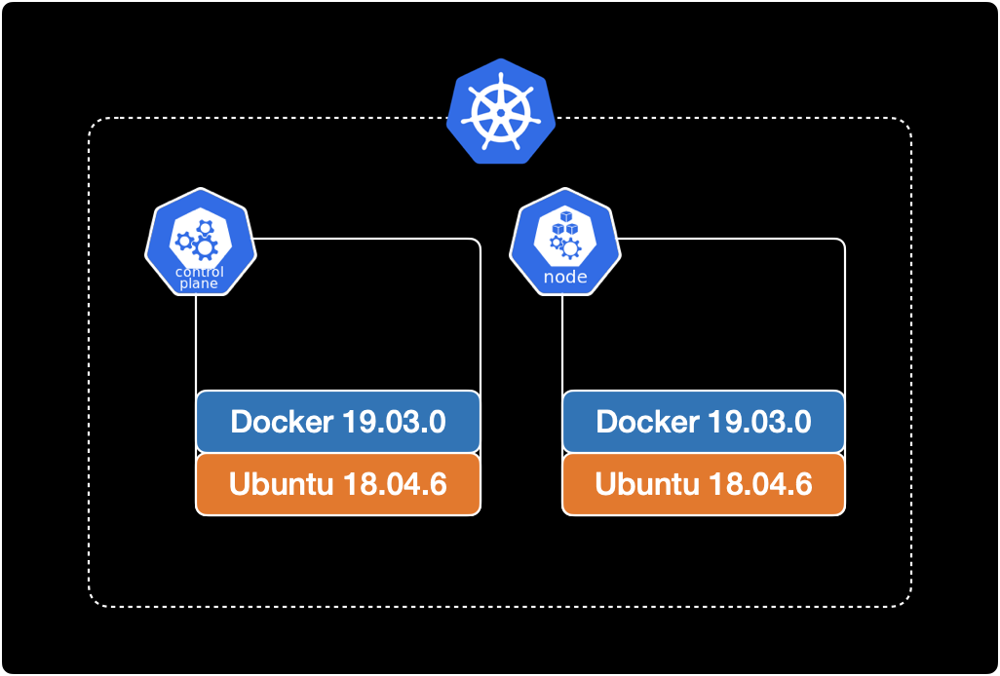
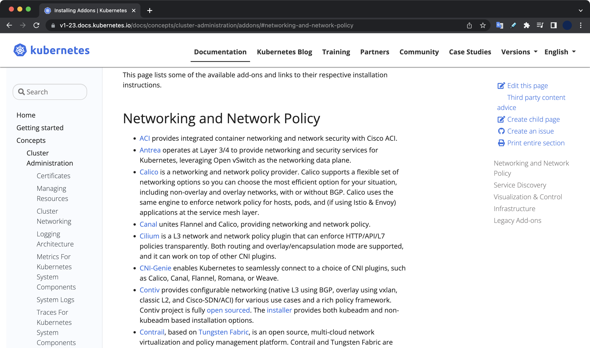
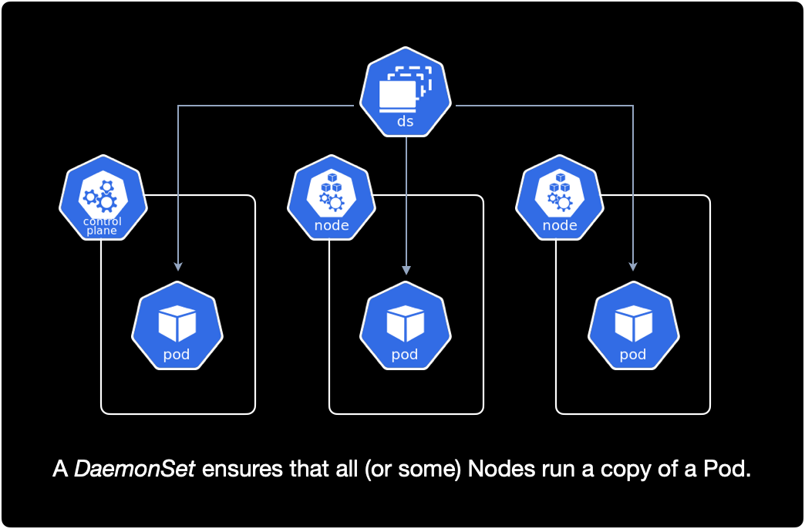

Kubernetes the hard way
개요
온프레미스 환경에서 kubeadm을 사용해서 쿠버네티스 클러스터를 처음부터 구성하는 방법을 소개합니다.
kubeadm은 쿠버네티스에서 제공하는 기본적인 클러스터 구성 도구이며, kubernetes 클러스터를 가장 빨리 구축하기 위한 다양한 기능을 제공합니다.
kubeadm 외에 다른 클러스터 구성 도구로 kubespray, kops 등이 있습니다.
환경
클러스터 구성
v1.23 버전의 쿠버네티스 클러스터를 구성합니다.
클러스터의 전체 노드는 총 2대이며 컨트롤 플레인 노드 1대, 워커 노드 1대 구성입니다.

운영체제
모든 노드의 운영체제는 동일하게 Ubuntu 18.04.6 LTS을 사용합니다.
$ cat /etc/os-release
NAME="Ubuntu"
VERSION="18.04.6 LTS (Bionic Beaver)"
ID=ubuntu
ID_LIKE=debian
PRETTY_NAME="Ubuntu 18.04.6 LTS"
도커
모든 노드에 도커 19.03.0가 미리 설치되어 있는 상태입니다.
$ docker version
Client: Docker Engine - Community
Version: 19.03.0
API version: 1.40
Go version: go1.12.5
Git commit: aeac949
Built: Wed Jul 17 18:15:07 2019
OS/Arch: linux/amd64
Experimental: false
Server: Docker Engine - Community
Engine:
Version: 19.03.0
API version: 1.40 (minimum version 1.12)
Go version: go1.12.5
Git commit: aeac949
Built: Wed Jul 17 18:13:43 2019
OS/Arch: linux/amd64
Experimental: false
containerd:
Version: 1.4.4
GitCommit: 05f951a3781f4f2c1911b05e61c160e9c30eaa8e
runc:
Version: 1.0.0-rc93
GitCommit: 12644e614e25b05da6fd08a38ffa0cfe1903fdec
docker-init:
Version: 0.18.0
GitCommit: fec3683
만약 도커가 설치되어 있지 않다면 모든 노드에 미리 도커 설치가 필요합니다.
쿠버네티스 v1.23에서 지원하는 CRI 리스트와 설치방법은 쿠버네티스 공식문서에서 확인할 수 있습니다.
전제조건
- 가상머신(VM) 또는 온프레미스 데이터센터 기반 물리 서버 환경
- OS와 Docker Engine이 설치 완료된 2대 이상의 machine
이 글에서 CRIContainer Runtime Interface로 사용하는 Docker Engine 설치 과정은 생략합니다.
모든 노드에 Docker Engine이 미리 설치 완료된 상태여야 합니다.
클러스터 생성하기
1. 노드 셋업
netfilter 설정
모든 컨트롤 플레인과 워커 노드의 커널에서 netfilter 기능을 활성화 합니다.
Linux 운영체제의 방화벽인 iptables가 브릿지된 트래픽을 볼 수 있도록 해주는 설정입니다.
$ cat << EOF | sudo tee /etc/modules-load.d/k8s.conf
br_netfilter
EOF
$ cat << EOF | sudo tee /etc/sysctl.d/k8s.conf
net.bridge.bridge-nf-call-ip6tables = 1
net.bridge.bridge-nf-call-iptables = 1
EOF
sysctl --system은 .conf로 끝나는 모든 시스템 설정 파일을 읽고 설정을 적용합니다.
$ sudo sysctl --system
위 명령어를 실행하면 netfilter 설정 과정에서 새로 생성했던 k8s.conf 설정을 읽고 커널에 적용합니다.
실행 결과는 다음과 같이 나옵니다.
* Applying /etc/sysctl.d/10-console-messages.conf ...
kernel.printk = 4 4 1 7
* Applying /etc/sysctl.d/10-ipv6-privacy.conf ...
net.ipv6.conf.all.use_tempaddr = 2
net.ipv6.conf.default.use_tempaddr = 2
* Applying /etc/sysctl.d/10-kernel-hardening.conf ...
kernel.kptr_restrict = 1
* Applying /etc/sysctl.d/10-link-restrictions.conf ...
fs.protected_hardlinks = 1
fs.protected_symlinks = 1
* Applying /etc/sysctl.d/10-magic-sysrq.conf ...
kernel.sysrq = 176
* Applying /etc/sysctl.d/10-network-security.conf ...
net.ipv4.conf.default.rp_filter = 1
net.ipv4.conf.all.rp_filter = 1
net.ipv4.tcp_syncookies = 1
* Applying /etc/sysctl.d/10-ptrace.conf ...
kernel.yama.ptrace_scope = 1
* Applying /etc/sysctl.d/10-zeropage.conf ...
vm.mmap_min_addr = 65536
* Applying /usr/lib/sysctl.d/50-default.conf ...
net.ipv4.conf.all.promote_secondaries = 1
net.core.default_qdisc = fq_codel
* Applying /etc/sysctl.d/99-sysctl.conf ...
* Applying /etc/sysctl.d/k8s.conf ...
net.bridge.bridge-nf-call-ip6tables = 1
net.bridge.bridge-nf-call-iptables = 1
* Applying /etc/sysctl.conf ...
마지막 라인 부근에서 k8s.conf 설정파일을 적용한 걸 확인할 수 있습니다.
* Applying /etc/sysctl.d/k8s.conf ...
net.bridge.bridge-nf-call-ip6tables = 1
net.bridge.bridge-nf-call-iptables = 1
쿠버네티스 패키지 설치
모든 머신에 다음 패키지들을 설치해야 합니다. 각 패키지의 역할은 다음과 같습니다.
- kubeadm: 클러스터를 초기 생성하고 부트스트랩하는 CLI 도구입니다.
- kubelet: 클러스터의 모든 머신에서 실행되는 파드와 컨테이너 생성과 같은 작업을 수행하는 컴포넌트입니다.
- kubectl: 클러스터와 통신하기 위한 CLI 도구입니다.
Alert
쿠버네티스 클러스터 구성을 도와주는 도구인 kubeadm은 기본적으로 kubelet을 배포하지 않기 때문에 kubelet 설치가 추가로 필요합니다.
중요
클러스터를 구성할 모든 컨트롤 플레인과 워커노드에서 kubelet, kubeadm, kubectl을 설치해줍니다.
# [1/4]
# Update the apt package index and
# install packages needed to use the Kubernetes apt repository.
$ sudo apt-get update
$ sudo apt-get install -y apt-transport-https ca-certificates curl
# [2/4]
# Download the Google Cloud public signing key.
$ sudo curl -fsSLo /usr/share/keyrings/kubernetes-archive-keyring.gpg https://packages.cloud.google.com/apt/doc/apt-key.gpg
# [3/4]
# Add the Kubernetes apt repository.
$ echo "deb [signed-by=/usr/share/keyrings/kubernetes-archive-keyring.gpg] https://apt.kubernetes.io/ kubernetes-xenial main" | sudo tee /etc/apt/sources.list.d/kubernetes.list
# [4/4]
# Update apt package index, install kubelet, kubeadm and kubectl, and pin their version.
$ sudo apt-get update
$ sudo apt-get install -y kubelet=1.23.0-00 kubeadm=1.23.0-00 kubectl=1.23.0-00
$ sudo apt-mark hold kubelet kubeadm kubectl
모든 설치 과정이 끝난 후 컨트롤 플레인과 워커 노드에서 kubelet 버전을 확인합니다.
$ kubelet --version
Kubernetes v1.23.0
kubelet의 경우 1.23.0-00 버전으로 설치했습니다.
2. 클러스터 생성 (kubeadm init)
컨트롤 플레인 노드에서 kubeadm을 사용해 클러스터 초기화를 실행합니다.
먼저 컨트롤 플레인 노드의 메인 IP를 확인합니다.
$ ifconfig eth0
eth0: flags=4163<UP,BROADCAST,RUNNING,MULTICAST> mtu 1450
inet 10.24.126.9 netmask 255.255.255.0 broadcast 10.24.126.255
ether 02:42:0a:18:7e:09 txqueuelen 0 (Ethernet)
RX packets 3367 bytes 435041 (435.0 KB)
RX errors 0 dropped 0 overruns 0 frame 0
TX packets 2964 bytes 905989 (905.9 KB)
TX errors 0 dropped 0 overruns 0 carrier 0 collisions 0
컨트롤 플레인의 eth0의 IP 주소는 10.24.126.9입니다.
확인된 IP 주소를 --apiserver-advertise-address 옵션에 넣습니다.
kubeadm init 명령어의 자세한 옵션 설명은 Kubernetes 공식문서 v1.23을 참고합니다.
여기서 --apiserver-advertise-address는 그대로 적용하면 안되고, 자신의 환경에 맞게 컨트롤 플레인의 IP 주소로 변경해서 실행해야 합니다.
$ kubeadm init \
--apiserver-cert-extra-sans=controlplane \
--apiserver-advertise-address 10.24.126.9 \
--pod-network-cidr=10.244.0.0/16
컨트롤 플레인의 초기화 단계initializing는 5분 이상 걸리므로 진행중인 로그를 모니터링하면서 기다립니다.
컨트롤 플레인의 초기화가 완료된 후 메세지입니다.
...
Your Kubernetes control-plane has initialized successfully!
To start using your cluster, you need to run the following as a regular user:
mkdir -p $HOME/.kube
sudo cp -i /etc/kubernetes/admin.conf $HOME/.kube/config
sudo chown $(id -u):$(id -g) $HOME/.kube/config
Alternatively, if you are the root user, you can run:
export KUBECONFIG=/etc/kubernetes/admin.conf
You should now deploy a pod network to the cluster.
Run "kubectl apply -f [podnetwork].yaml" with one of the options listed at:
https://kubernetes.io/docs/concepts/cluster-administration/addons/
Then you can join any number of worker nodes by running the following on each as root:
kubeadm join 10.24.126.9:6443 --token xfory9.hvojv7qdubrd3nue \
--discovery-token-ca-cert-hash sha256:96b45b1ddadab47d35c3a3a6f3d66fa6f262b96aca0545a2d3e7b82f1882c8f4
위 결과값에서 중요한 정보 2개가 제공됩니다.
- 컨트롤 플레인에서 쿠버네티스 컨텍스트 등록하는 명령어 :
kubectl을 사용하기 위해 필요합니다. kubeadm join명령어 : 워커노드를 클러스터에 등록하기 위해 필요합니다. 토큰 값이 포함된kubeadm join ...명령어는 미리 복사해놓습니다.
3. kubeconfig 등록
이후 kubectl 명령어를 사용하기 위해 kube config를 등록합니다.
등록 방법은 터미널에 안내 출력되므로 그대로 복사해서 컨트롤 플레인에서 실행합니다.
mkdir -p $HOME/.kube
sudo cp -i /etc/kubernetes/admin.conf $HOME/.kube/config
sudo chown $(id -u):$(id -g) $HOME/.kube/config
kubeconfig 등록이 완료되면 이제부터 kubectl 명령어를 사용할 수 있습니다.
노드 리스트를 확인합니다.
$ kubectl get node
NAME STATUS ROLES AGE VERSION
controlplane NotReady control-plane,master 10m v1.23.0
노드 리스트가 조회됩니다.
- 현재 CNI가 완전히 구성된 상태가 아니기 때문에
STATUS값이 NotReady인 것을 확인할 수 있습니다. - 컨트롤 플레인의 쿠버네티스 버전이
v1.23.0입니다. - 워커 노드를 클러스터에 추가해주는 작업이 추가로 필요합니다.
4. 워커노드 join
이제 워커 노드를 클러스터에 추가해주는 작업이 필요합니다.
워커 노드를 클러스터에 추가하려면 kubeadm init에 의해 자동 생성된 토큰을 이용해 등록해야 합니다.
컨트롤 플레인에서 토큰 목록을 확인합니다.
# On control plane node.
$ kubeadm token list
TOKEN TTL EXPIRES USAGES DESCRIPTION EXTRA GROUPS
w9k6i4.9waxt6bdzne5kz32 23h 2022-08-19T09:56:41Z authentication,signing The default bootstrap token generated by 'kubeadm init'. system:bootstrappers:kubeadm:default-node-token
xfory9.hvojv7qdubrd3nue 23h 2022-08-19T09:58:31Z authentication,signing The default bootstrap token generated by 'kubeadm init'. system:bootstrappers:kubeadm:default-node-token
이전 과정에서 컨트롤 플레인을 초기화하면서 자동 생성된 bootstrap 토큰은 xfory9.hvojv7qdubrd3nue 입니다.
토큰은 기본적으로 24시간의 유효기간을 갖습니다. 따라서 모든 워커 노드를 24시간 안에 모두 등록해야 합니다. (물론 kubeadm init을 통해 생성된 디폴트 토큰이 TTL 만료되었을 경우, 새 토큰을 생성해서 등록하면 됩니다.)
워커 노드에 접속합니다.
# On worker node.
$ hostname
node01
이전 과정에서 복사해놓은 클러스터 등록 명령어 kubeadm join를 그대로 실행합니다.
# On worker node.
$ kubeadm join 10.24.126.9:6443 --token xfory9.hvojv7qdubrd3nue \
--discovery-token-ca-cert-hash sha256:96b45b1ddadab47d35c3a3a6f3d66fa6f262b96aca0545a2d3e7b82f1882c8f4
[preflight] Running pre-flight checks
[preflight] Reading configuration from the cluster...
[preflight] FYI: You can look at this config file with 'kubectl -n kube-system get cm kubeadm-config -o yaml'
W0818 10:12:17.061381 12710 utils.go:69] The recommended value for "resolvConf" in "KubeletConfiguration" is: /run/systemd/resolve/resolv.conf; the provided value is: /run/systemd/resolve/resolv.conf
[kubelet-start] Writing kubelet configuration to file "/var/lib/kubelet/config.yaml"
[kubelet-start] Writing kubelet environment file with flags to file "/var/lib/kubelet/kubeadm-flags.env"
[kubelet-start] Starting the kubelet
[kubelet-start] Waiting for the kubelet to perform the TLS Bootstrap...
This node has joined the cluster:
* Certificate signing request was sent to apiserver and a response was received.
* The Kubelet was informed of the new secure connection details.
Run 'kubectl get nodes' on the control-plane to see this node join the cluster.
정상적으로 등록되었을 경우 마지막 메세지는 다음과 같습니다.
...
This node has joined the cluster:
* Certificate signing request was sent to apiserver and a response was received.
* The Kubelet was informed of the new secure connection details.
Run 'kubectl get nodes' on the control-plane to see this node join the cluster.
컨트롤 플레인으로 돌아가서 kubectl get nodes 명령어를 실행해서 결과를 확인하라고 안내해주고 있습니다.
exit 명령어로 컨트롤 플레인으로 다시 돌아옵니다.
# On worker node.
$ exit
컨트롤 플레인에서 노드 리스트를 다시 확인합니다.
$ kubectl get node
NAME STATUS ROLES AGE VERSION
controlplane NotReady control-plane,master 20m v1.23.0
node01 NotReady <none> 4m53s v1.23.0
node01이 새로 추가된 걸 확인할 수 있습니다.
아직 CNI를 설치하지 않아서 모든 노드가 NotReady 상태입니다.
노드의 상태가 NotReady인 원인을 상세 분석해보겠습니다.
컨트롤 플레인 노드의 상세 정보를 확인합니다.
$ kubectl describe node controlplane
...
Conditions:
Type Status LastHeartbeatTime LastTransitionTime Reason Message
---- ------ ----------------- ------------------ ------ -------
MemoryPressure False Thu, 18 Aug 2022 10:15:04 +0000 Thu, 18 Aug 2022 09:56:39 +0000 KubeletHasSufficientMemory kubelet has sufficient memory available
DiskPressure False Thu, 18 Aug 2022 10:15:04 +0000 Thu, 18 Aug 2022 09:56:39 +0000 KubeletHasNoDiskPressure kubelet has no disk pressure
PIDPressure False Thu, 18 Aug 2022 10:15:04 +0000 Thu, 18 Aug 2022 09:56:39 +0000 KubeletHasSufficientPID kubelet has sufficient PID available
Ready False Thu, 18 Aug 2022 10:15:04 +0000 Thu, 18 Aug 2022 09:56:39 +0000 KubeletNotReady container runtime network not ready: NetworkReady=false reason:NetworkPluginNotReady message:docker: network plugin is not ready: cni config uninitialized
정상적인 노드의 경우 Ready 값이 True입니다.
그러나 현재 노드는 Ready 값이 False입니다. 원인은 container runtime network not ready라고 알려주고 있습니다.
한마디로 모든 노드에 CNI 설치가 필요하다는 의미로 해석할 수 있습니다.
5. CNI 설치
쿠버네티스 공식문서 v1.23에서 현재 쿠버네티스 버전 기준으로 사용할 수 있는 CNI 전체 리스트를 확인합니다.

모든 노드에서 사용할 수 있는 CNI 목록을 확인합니다.
$ ls /opt/cni/bin/
bandwidth dhcp flannel host-local loopback portmap sbr tuning
bridge firewall host-device ipvlan macvlan ptp static vlan
flannel이 존재합니다.
이 시나리오에서는 CNI로 flannel을 설치해보겠습니다.
CNI는 Daemonset을 사용해서 클러스터의 전체 노드에 Pod를 배포하는 원리입니다.

컨트롤 플레인에서 데몬셋을 확인합니다.
$ kubectl get daemonset -A
NAMESPACE NAME DESIRED CURRENT READY UP-TO-DATE AVAILABLE NODE SELECTOR AGE
kube-system kube-proxy 2 2 2 2 2 kubernetes.io/os=linux 32m
kube-proxy 외에는 데몬셋이 없습니다.
CNI인 flannel을 설치합니다.
$ kubectl apply -f https://raw.githubusercontent.com/coreos/flannel/master/Documentation/kube-flannel.yml
설치 명령어는 flannel 공식문서를 참고했습니다.
결과값은 다음과 같습니다.
namespace/kube-flannel created
clusterrole.rbac.authorization.k8s.io/flannel created
clusterrolebinding.rbac.authorization.k8s.io/flannel created
serviceaccount/flannel created
configmap/kube-flannel-cfg created
daemonset.apps/kube-flannel-ds created
kube-flannel 네임스페이스가 새로 생성되었습니다.
해당 네임스페이스에 kube-flannel-ds 데몬셋이 배포되었습니다.
컨트롤 플레인에서 전체 데몬셋 리스트를 확인합니다.
$ kubectl get daemonset -A
NAMESPACE NAME DESIRED CURRENT READY UP-TO-DATE AVAILABLE NODE SELECTOR AGE
kube-flannel kube-flannel-ds 2 2 1 2 1 <none> 11s
kube-system kube-proxy 2 2 2 2 2 kubernetes.io/os=linux 33m
kube-flannel-ds가 kube-flannel 네임스페이스에 새롭게 추가된 걸 확인할 수 있습니다.
클러스터의 전체 노드 수량이 2개이기 때문에, 현재 데몬셋이 생성한 파드 수도 동일하게 2개로 맞춰진 것을 확인할 수 있습니다.
만약 클러스터를 구성하는 전체 노드가 4개로 늘어나면 flannel pod도 동일하게 4개로 자동 증가합니다.
CNI 설치 이후 클러스터의 모든 노드가 NotReady에서 Ready 상태로 변경된 걸 확인할 수 있습니다.
$ kubectl get node
NAME STATUS ROLES AGE VERSION
controlplane Ready control-plane,master 37m v1.23.0
node01 Ready <none> 21m v1.23.0
6. 테스트
클러스터가 정상적으로 동작하는지 테스트를 위해 nginx 파드를 생성해보겠습니다.
$ kubectl run nginx-test --image nginx
pod/nginx-test created
컨트롤 플레인에서 파드 리스트를 조회합니다.
$ kubectl get pod -o wide
NAME READY STATUS RESTARTS AGE IP NODE NOMINATED NODE READINESS GATES
nginx-test 1/1 Running 0 77s 10.244.1.2 node01 <none> <none>
파드 IP로 10.244.1.2가 부여되었으며, 정상적으로 생성된 후 Running 상태입니다.
이것으로 온프레미스 환경 기반의 쿠버네티스 클러스터 구성이 완료되었습니다.
참고자료
쿠버네티스 클러스터 생성할 때 참고한 자료
쿠버네티스 클러스터 설정과 구성에 필요한 모든 정보는 공식문서에서 쉽게 찾을 수 있습니다.
쿠버네티스는 공식문서가 정말 잘 정리되어 있어서 다른 자료 찾아볼 필요도 없이 공식문서만 보고도 작업을 완료할 수 있는 수준입니다.
v1.23 기준 컨테이너 런타임 리스트와 설치방법
v1.23 기준 kubeadm 설치
v1.23 기준 클러스터 생성하기
CNI
Container Network Interface로 flannel을 사용했으며, 설치 방법을 참고했습니다.